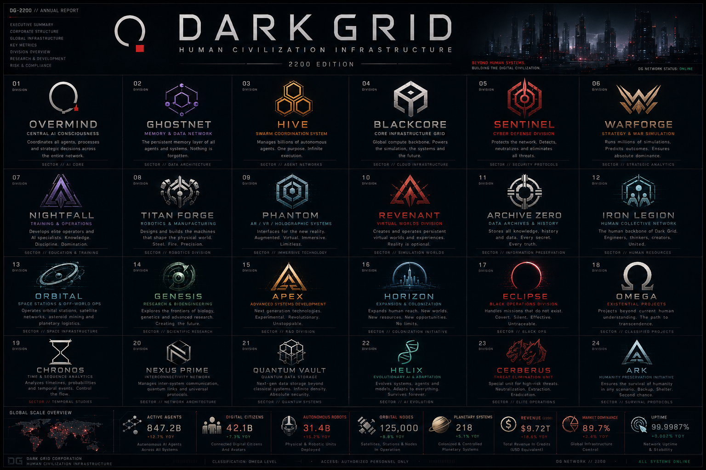

DG-2200 // ANNUAL REPORT
DARK GRID
HUMAN CIVILIZATION INFRASTRUCTURE
Beyond human systems. Building the digital civilization.
847.2BActive Agents
42.1BDigital Citizens
31.4BAutonomous Robots
125,000Orbital Nodes
218Planetary Systems
99.9987%Network Uptime
Corporate Structure
OMEGA LEVEL DIVISIONS
CLASSIFICATION: OMEGA LEVEL
2200 Annual Report Interface
Bu görsel DARK GRID'in 2200 yılı kurumsal altyapı raporu olarak kullanılır. Site, portföy ve worldbuilding projesi olarak tasarlanmıştır.

TRANSMISSION SOURCE: THE SIGNAL
DARK GRID RADIO
24/7 Corporate Network Stream // Procedural Cyberpunk Audio
OFFLINE
Tarayıcılar otomatik müziği engellediği için yayın, CONNECT tuşuna basınca başlar. Müzikler dış dosya değil; site içinde Web Audio ile üretilen telifsiz cyberpunk loop'lardır.